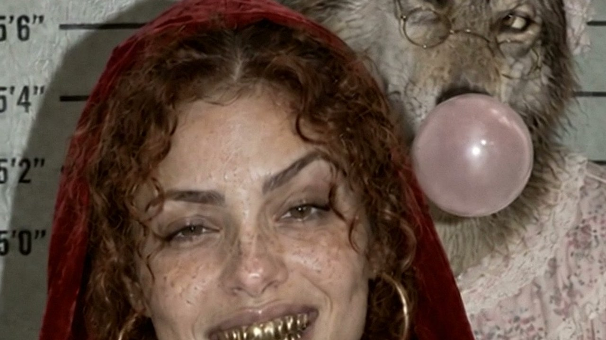

How I made Little Red from the hood: the prompts and the edit
A 28-second reel: the Big Bad Wolf breaks into Grandma's house to ambush Little Red, but Red runs the neighborhood and Grandma is waiting in the wardrobe. Here are the 5 steps, the prompts I pasted and the exact cut times.
Sound off here. The song is added on Instagram. Everything you see is AI-generated.
What you need
- An image model that does real skin. I used GPT Image 2.5 inside Melius (about 70 credits per image, 80 with a reference).
- Seedance 2.5 for video. Also inside Melius: 6 seconds at 480p Draft cost 752 credits per clip. The whole reel came to about 7,900 Melius credits.
- Any editor. CapCut is fine: hard cuts, a zoom and a song.
5 steps
Story: the famous line becomes the ending
Pick the one line everybody knows from the tale and turn it into the last picture. Then build the middle as a trap that flips: the wolf thinks he is the hunter, the girl and her grandma are the real gang.- Hook: two mugshots, the wolf in grandma's nightgown, then Red popping her gum.
- Her world: she walks her street, Grandma nods from the porch with a shotgun on her knees, the basket is full of cash.
- The wolf: stalks her, runs ahead, waits in Grandma's bed.
- "What big...": three macros, eyes, ears, teeth.
- The flip: Grandma steps out of the wardrobe and racks the shotgun. The wolf raises his paws.
- The ending: the getaway, then the mugshot: she grins with gold grills.
Character sheets
One sheet per character: front, three-quarter, back, close-up, profile and three expressions on a grey background. Every later image and clip uses these as references, so the faces stay the same. My template (swap the brackets):Photorealistic character reference sheet of the same [WHO: woman about 23, olive skin, light freckles, curly auburn hair], five views on a neutral light-grey studio background: 1. Full body front, head to feet, neutral stance, holding [A PROP FOR SCALE: a wicker basket with a red-and-white gingham cloth]. 2. Full body three-quarter view left. 3. Full body rear view. 4. Head-and-shoulders close-up, straight-on. 5. Head-and-shoulders 90-degree profile. Bottom row: three small head crops with expressions: [calm neutral, crooked smirk, raised eyebrow]. Wardrobe: [short red velvet hooded cape, white ribbed tank top, loose light-wash jeans, plain white sneakers with no logos, large thin gold hoop earrings]. Real skin texture: visible pores, uneven skin tone, fine baby hairs, a few flyaway curls, no retouching, no glamorization, no beauty filter. Clean soft studio light, key upper left, fill right. Identical identity, proportions and costume in every view. Photoreal, not illustrated. No text, no labels, no logos, no watermark, no extra people.
For the wolf I wrote "an anthropomorphic storybook wolf made real, like a high-end practical film creature photographed on set, not CGI-looking, not a mascot costume": upright man's body, a real grey wolf head, clawed hands and a tail, in Grandma's pink nightgown, lace night cap and round glasses.
Start frames: one per clip, each with a "device"
Every clip starts from a still made from the sheets. Give each scene its own camera look so the reel feels filmed, not generated: police flash, doorbell camera, security camera, dashcam, telephoto through branches. The mugshot:Image 1 = identity reference (face, freckles, curly auburn hair, red velvet hooded cape, gold hoop earrings); ignore its background and layout. Photorealistic police booking photograph, vertical 9:16. The same woman from Image 1 stands centred facing the camera in front of a pale grey-green wall with painted black height-chart lines, hood up, holding a black letter-board placard at chest height reading exactly "LIL RED" and below it "CASE 001". She is blowing a large pink bubble-gum bubble, eyes calm, one eyebrow slightly raised. Harsh frontal on-camera flash, hard shadow on the wall, flat dull colours, old compact digital camera, mild noise. Real skin texture: pores, freckles, flyaway curls, slight shine on the nose, no retouching, no beauty filter. No other text, no logos, no watermark, no other people.
Check every still before you animate it: count the people, read the text on the placard, look at the hands.
Video: multi-shot clips
The viral reels in this niche cut a new shot every 1.6 seconds. Instead of one clip per shot, I asked Seedance 2.5 for 2 to 3 shots inside one 6-second clip, with the start frame and the sheets as references. Same light, same faces, three angles. The hook clip:ASSET BINDING: Image 1 = the anthropomorphic wolf (upright man's body, real grey wolf head, furry clawed hands, pink floral nightgown, white lace night cap, round wire glasses) holding the placard "B.B. WOLF / CASE 001" in the police booking room. Image 2 = the young woman in the red velvet hood with gold hoop earrings holding the placard "LIL RED / CASE 001". SUMMARY: Police booking room, two mugshots back to back: a guilty wolf in grandma's nightgown, then a calm young woman in a red hood. Deadpan comedy. STYLE: photoreal vertical 9:16 police booking camera footage, harsh frontal flash, old compact digital camera look, mild noise, real-time speed, no slow motion. SHOT 1 [0-3s] medium shot, eye level, static, straight-on, exact framing and look of Image 1: the wolf stands holding the placard; the camera flash fires and the frame flashes white; he blinks, his ears flatten, and with one clawed finger he nervously pushes his round glasses up his snout while glancing sideways, embarrassed. HARD CUT. SHOT 2 [3-6s] medium close-up, eye level, static, same grey-green height-chart wall, exact look of Image 2: the young woman in the red velvet hood holds the LIL RED placard and chews gum; she blows a big pink bubble, the flash fires and the bubble pops on her lips; she smirks slowly with one eyebrow raised, totally unbothered. CONSISTENCY: placard text stays exactly as in the images, same faces and wardrobe, the wolf keeps real fur and a real wolf head, five fingers per hand, no extra people. AUDIO: camera flash pops with capacitor whine, a small nervous whimper from the wolf, gum chewing, bubble pop, quiet room tone; no music, no dialogue, no subtitles.
- Bind every image to one job: "Image 1 = exact first frame", "Image 2 = her identity". Two well-labelled references beat five vague ones.
- Give each shot its own camera line: size, angle, lens feel and one move. End it with HARD CUT.
- One action per shot, ending on something you can see: the bubble pops, the door swings shut.
- Ask for sound but no music: real sounds tied to the action, "no music, no dialogue, no subtitles". The song goes on in the edit.
- Draft at 480p first. You only use 1 to 2 seconds of each shot, so Draft quality holds up after a light upscale.
The edit: cut on the beat
Put the clips over the song and cut every shot on a beat, 21 cuts in 28 seconds. The drop lands on the first cut after the two mugshots, and Red's bubble pops right on it. Cut times in seconds:1.753.41 drop4.715.366.647.949.4310.0811.3512.6513.4914.1415.4216.0717.4118.8520.3421.6422.2923.781.75, 3.41, 4.71, 5.36, 6.64, 7.94, 9.43, 10.08, 11.35, 12.65, 13.49, 14.14, 15.42, 16.07, 17.41, 18.85, 20.34, 21.64, 22.29, 23.78
- Turn the colour down. AI clips come out too saturated. I measured the viral reels and mine: mine had about 1.5 times their saturation, so I cut it by a third and lifted the shadows a little.
- Vary the shot lengths. Short, short, then one longer hold on the biggest moment. All shots at the same length feels like a metronome.
- Snap zooms on the mugshots in your editor, right on the flash.
- End on the face. The last shot looks into the lens and holds for 4 seconds.
The same reel can get 2,000 views or 2 million.
The story stays the same. The hook, the cover and the caption are what change, and the creators in this niche post several versions of one reel to find the winner. Planning that by hand every week is a lot, so I don't: Claude Code runs my content every day, from the morning idea list to the edit, the posting and the DMs. Even the DM that sent you here went out by itself. Under a minute:
Under a minute, sound on. The presenter is my AI clone, made with the methods taught inside.
Join AI Virality Creators →Try it free for 7 days. Then $9/month or $67/year, and the price you join at stays yours. It goes up as the group grows.
What you get inside
A path for complete beginners
START HERE takes you from zero to your first consistent AI character, lesson by lesson. Then Go Viral: 8 short lessons and cheat sheets for Reels and TikTok.
Every reel I post, taken apart
The prompts, the edit choices and what each shot cost in credits. You copy what already worked instead of guessing.
Claude Code, in plain English
Master Claude Code: real builds with every file included. Claude writes the code; you say what you want and approve each step.
30+ courses on today's tools
Kling 3.0, Veo 3.1, Nano Banana Pro, ElevenLabs voices, UGC and cinematic ads, prompt systems, 4K upscaling.
Feedback from me
Post your video in the community. I read it and reply myself, and other members add their notes.
From skill to client work
Modules on finding your first clients, pricing what you make and delivering it like a pro.
Your first week
- Day 1. Join, introduce yourself and say what you want to make. I point you to the module that fits.
- Days 2–4. Build your first AI character in START HERE, one short lesson a night. (Here for Claude Code? Start Master Claude Code instead.)
- Days 5–6. Open a reel breakdown and copy its structure for your own idea.
- Day 7. Post your first video in the community and get feedback on it.
Stop saving tutorials. Start posting.
AI Virality Creators is my Skool community. Everything above is in one place, in order, and I answer you myself.
- The LIL RED breakdown: all 9 video prompts, the 7 start frames, the edit timeline and what every clip cost.
- Go Viral: 8 short lessons and cheat sheets for Reels and TikTok.
- 30+ step-by-step courses and the breakdown of every reel, with prompts and credit costs.
- Personal feedback on what you post, next to 125+ creators building the same skills.
Try it free for 7 days. Then $9/month or $67/year, and the price you join at stays yours. It goes up as the group grows.
Before you join
I'm a complete beginner. Is this too advanced?
Not at all. START HERE assumes zero experience and goes in order: your first image, your first video, then a character that looks the same in every shot. If you can type a sentence, you can follow it.
I can't code. Do I need to?
You don't need to. For the Claude Code lessons you describe what you want in plain English, Claude writes the code, and you approve each step. Every lesson shows the exact clicks.
Do I need a Skool account? Can I use it on my phone?
Skool is the app the community lives in. Signing up is free and takes about a minute when you join, and it works in the Skool phone app or any browser. Watching lessons and posting work fine on a phone; Claude Code itself runs on a computer.
I don't have much time.
The lessons are short and numbered, so you always know which one is next. One lesson an evening keeps you moving, and the community keeps you posting.
Can't I learn all of this free on YouTube?
You can start there, and free guides like this one are made for exactly that. What you won't find for free: the right order, my real project files, the credit cost of every shot, and someone who looks at your video and tells you what to fix.
AI tools change every month. Won't it be outdated?
New tools get their own modules: Kling 3.0, Veo 3.1 and Nano Banana Pro are already in. The breakdowns teach how a reel is built, and that carries over to whatever tool comes next.
AI credits get expensive. What will I spend?
Every breakdown shows what each shot cost, so you know before you start. A lot of what I teach costs 0 credits, like the guide you're reading now.
Will I get lost in a big group?
It's around 125 people, small enough that new posts get answered. I reply myself, and members comment on each other's work.
Is the person in the video real?
The presenter is my AI clone, built with the same methods taught inside. I say so every time. The community is run by me, and I answer you myself.
Will this make me money?
I can't promise income. You get the skill, finished videos to show, and modules on finding clients and pricing your work. What you earn with them is up to you.
Is it only about video?
Video is the core. Master Claude Code is the second part: real builds with every file included, starting with the Night Shift experiment. Prompting, voices and client work are in there too.
What if it's not for me?
Cancel anytime in your Skool settings. You also have the guarantee: publish your first AI video within 30 days of joining, and if you can't, message me for a refund. The full terms are on the About page.
Try it free for 7 days. Then $9/month or $67/year, and the price you join at stays yours. It goes up as the group grows.
Common mistakes
- Four shots in one 6-second clip. Every shot gets 1.5 seconds and the model rushes the action. Two or three shots per clip is the limit.
- Small details on a costume creature. Glasses on a snout or gum on a muzzle can vanish. Keep the gag big and easy to read.
- Continuity slips between clips. In my porch shot Grandma wears a grey cardigan instead of her pink housecoat. Put the sheet of every character in the scene into the references, not only the start frame.
- The first frame is a white flash. If your clip starts on a camera flash, trim it, or the reel opens on a blank frame.